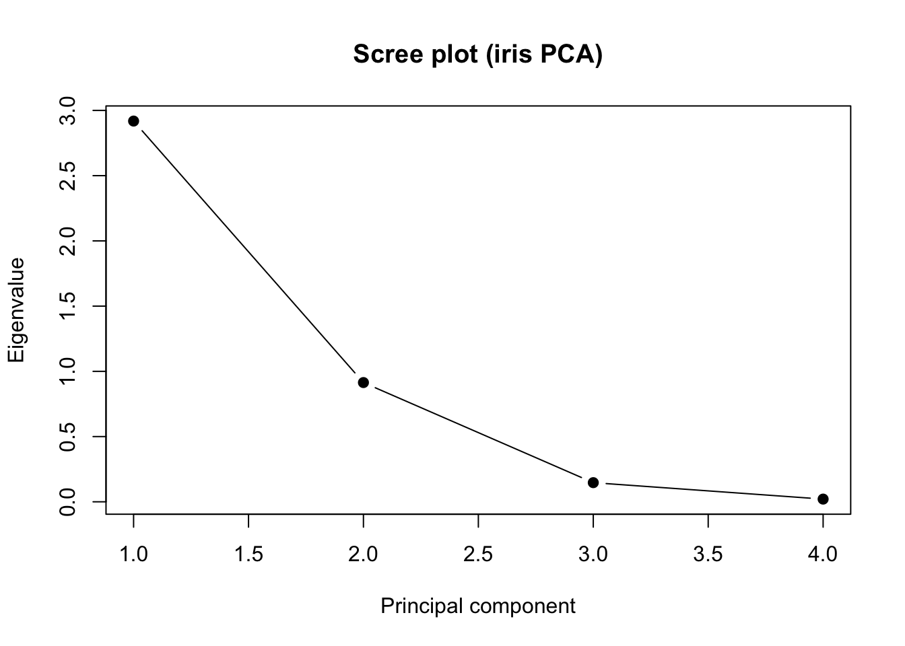
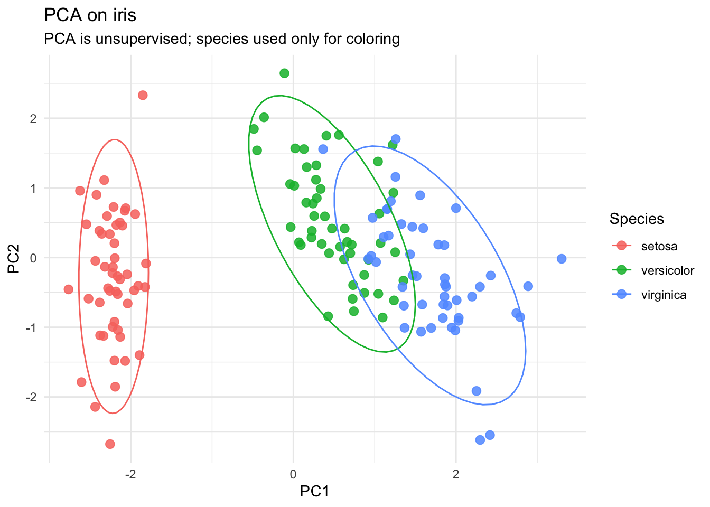
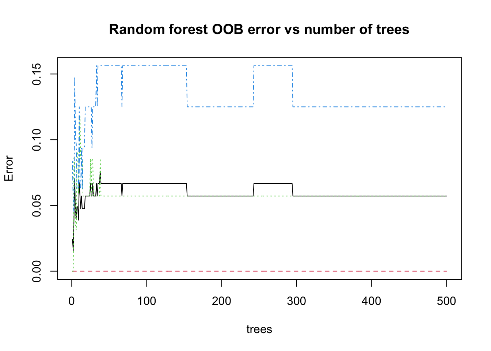
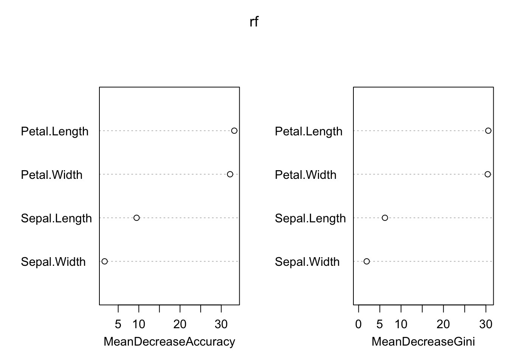

# For reproducible results
set.seed(1)
# Packages used today
library(ggplot2)
library(psych) # Bartlett's test
library(randomForest) # Random forest
# Data
data(iris)Statistical Machine Learning
PCA and Random Forest in R
1 Agenda
- framing — why PCA vs random forest
- Coding up a PCA
- Coding up a random forest model
2 Framing
2.1 PCA vs. Random Forest
- PCA is unsupervised: no response variable; goal is structure + variance reduction.
- Random forest is supervised: response variable exists; goal is prediction/classification + generalization.
2.2 What you should pay attention to in each workflow
- PCA: scaling, variance explained, scores vs loadings, “how many axises”, and whether structure is meaningful.
- Random forest: train/test split (or CV), OOB (out-of-bag error), confusion matrix, variable importance.
3 Setup up our environment:
Quick peek:
head(iris) Sepal.Length Sepal.Width Petal.Length Petal.Width Species
1 5.1 3.5 1.4 0.2 setosa
2 4.9 3.0 1.4 0.2 setosa
3 4.7 3.2 1.3 0.2 setosa
4 4.6 3.1 1.5 0.2 setosa
5 5.0 3.6 1.4 0.2 setosa
6 5.4 3.9 1.7 0.4 setosastr(iris)'data.frame': 150 obs. of 5 variables:
$ Sepal.Length: num 5.1 4.9 4.7 4.6 5 5.4 4.6 5 4.4 4.9 ...
$ Sepal.Width : num 3.5 3 3.2 3.1 3.6 3.9 3.4 3.4 2.9 3.1 ...
$ Petal.Length: num 1.4 1.4 1.3 1.5 1.4 1.7 1.4 1.5 1.4 1.5 ...
$ Petal.Width : num 0.2 0.2 0.2 0.2 0.2 0.4 0.3 0.2 0.2 0.1 ...
$ Species : Factor w/ 3 levels "setosa","versicolor",..: 1 1 1 1 1 1 1 1 1 1 ...4 Part I — PCA (unsupervised)
4.1 Step 1: choose numeric columns and (usually) scale
PCA uses numeric variables. Factors like Species are great for coloring plots later, but not for computing PCs.
iris_num <- iris[, 1:4]
iris_species <- iris$Species
round(cor(iris_num), 2) Sepal.Length Sepal.Width Petal.Length Petal.Width
Sepal.Length 1.00 -0.12 0.87 0.82
Sepal.Width -0.12 1.00 -0.43 -0.37
Petal.Length 0.87 -0.43 1.00 0.96
Petal.Width 0.82 -0.37 0.96 1.004.2 Step 2: check whether PCA is “worth it” (Bartlett’s test)
Bartlett’s test asks whether the correlation matrix differs from the identity matrix.
bart <- cortest.bartlett(cor(iris_num), n = nrow(iris_num))
bart$chisq
[1] 706.9592
$p.value
[1] 1.92268e-149
$df
[1] 6Expected output (trimmed):
$chisq
[1] ...
$p.value
[1] ...
...4.3 Step 3: fit PCA with prcomp()
We scale because sepal/petal variables are on different ranges.
pca <- prcomp(iris_num, center = TRUE, scale. = TRUE)
summary(pca)Importance of components:
PC1 PC2 PC3 PC4
Standard deviation 1.7084 0.9560 0.38309 0.14393
Proportion of Variance 0.7296 0.2285 0.03669 0.00518
Cumulative Proportion 0.7296 0.9581 0.99482 1.00000Expected output (trimmed):
Importance of components:
PC1 PC2 PC3 PC4
Standard deviation ... ... ... ...
Proportion of Variance ... ... ... ...
Cumulative Proportion ... ... ... ...4.4 Step 4: variance explained (small table)
eig <- pca$sdev^2
pve <- eig / sum(eig)
pca_var_table <- data.frame(
PC = paste0("PC", 1:length(eig)),
Eigenvalue = round(eig, 3),
PVE = round(pve, 3),
CumPVE = round(cumsum(pve), 3)
)
pca_var_table PC Eigenvalue PVE CumPVE
1 PC1 2.918 0.730 0.730
2 PC2 0.914 0.229 0.958
3 PC3 0.147 0.037 0.995
4 PC4 0.021 0.005 1.0004.5 Step 5: scree plot
plot(eig, type = "b", pch = 19,
xlab = "Principal component",
ylab = "Eigenvalue",
main = "Scree plot (iris PCA)")
4.6 Step 6: interpret scores and loadings
- Scores: where each observation lands in PC space.
- Loadings: how strongly each original variable contributes to each PC.
head(pca$x) PC1 PC2 PC3 PC4
[1,] -2.257141 -0.4784238 0.12727962 0.024087508
[2,] -2.074013 0.6718827 0.23382552 0.102662845
[3,] -2.356335 0.3407664 -0.04405390 0.028282305
[4,] -2.291707 0.5953999 -0.09098530 -0.065735340
[5,] -2.381863 -0.6446757 -0.01568565 -0.035802870
[6,] -2.068701 -1.4842053 -0.02687825 0.006586116pca$rotation PC1 PC2 PC3 PC4
Sepal.Length 0.5210659 -0.37741762 0.7195664 0.2612863
Sepal.Width -0.2693474 -0.92329566 -0.2443818 -0.1235096
Petal.Length 0.5804131 -0.02449161 -0.1421264 -0.8014492
Petal.Width 0.5648565 -0.06694199 -0.6342727 0.52359714.7 Step 7: plot PC1 vs PC2 (color by species)
scores <- as.data.frame(pca$x)
scores$Species <- iris_species
plt <- ggplot(scores, aes(PC1, PC2, color = Species)) +
geom_point(size = 2.6, alpha = 0.85) +
theme_minimal() +
labs(title = "PCA on iris", subtitle = "PCA is unsupervised; species used only for coloring")
plt + stat_ellipse() # 95% CI
4.8 Optional: test group separation after PCA
PCA itself is unsupervised. But after PCA, you can test whether known groups differ in the reduced space.
man <- manova(cbind(PC1, PC2) ~ Species, data = scores)
summary(man, test = "Pillai") Df Pillai approx F num Df den Df Pr(>F)
Species 2 1.1003 89.894 4 294 < 2.2e-16 ***
Residuals 147
---
Signif. codes: 0 '***' 0.001 '**' 0.01 '*' 0.05 '.' 0.1 ' ' 15 Part II — Random forest (supervised)
5.1 Step 1: define response and predictors
Here the response is Species (categorical), and predictors are the four measurements.
5.2 Step 2: train/test split
set.seed(42)
id_train <- sample(seq_len(nrow(iris)), size = 0.7 * nrow(iris))
train <- iris[id_train, ]
test <- iris[-id_train, ]5.3 Step 3: fit a random forest classifier
set.seed(123)
rf <- randomForest(
Species ~ ., data = train,
ntree = 500,
mtry = 2,
importance = TRUE
)
rf
Call:
randomForest(formula = Species ~ ., data = train, ntree = 500, mtry = 2, importance = TRUE)
Type of random forest: classification
Number of trees: 500
No. of variables tried at each split: 2
OOB estimate of error rate: 5.71%
Confusion matrix:
setosa versicolor virginica class.error
setosa 38 0 0 0.00000000
versicolor 0 33 2 0.05714286
virginica 0 4 28 0.125000005.4 Step 4: evaluate on the test set
pred <- predict(rf, newdata = test)
conf <- table(Observed = test$Species, Predicted = pred)
conf Predicted
Observed setosa versicolor virginica
setosa 12 0 0
versicolor 0 14 1
virginica 0 1 17acc <- mean(pred == test$Species)
acc[1] 0.95555565.5 Step 5: OOB error curve
OOB error is an internal “almost cross-validation” estimate from bootstrap sampling.
plot(rf, main = "Random forest OOB error vs number of trees")
5.6 Step 6: variable importance
importance(rf) setosa versicolor virginica MeanDecreaseAccuracy
Sepal.Length 6.040250 5.5892553 6.9462657 9.459304
Sepal.Width 4.688287 -0.5852934 0.2943366 1.703259
Petal.Length 22.699029 28.7675782 30.8233530 33.157860
Petal.Width 20.995156 28.3970314 32.0824521 32.133867
MeanDecreaseGini
Sepal.Length 6.205799
Sepal.Width 1.905945
Petal.Length 30.566666
Petal.Width 30.432237varImpPlot(rf)
5.7 Step 7 (quick): compare to a single decision tree intuition
Talking point (no extra code needed):
- A single tree can be unstable.
- A forest averages many de-correlated trees → typically improves generalization.